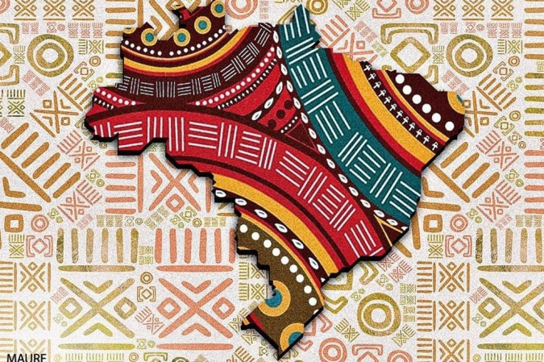
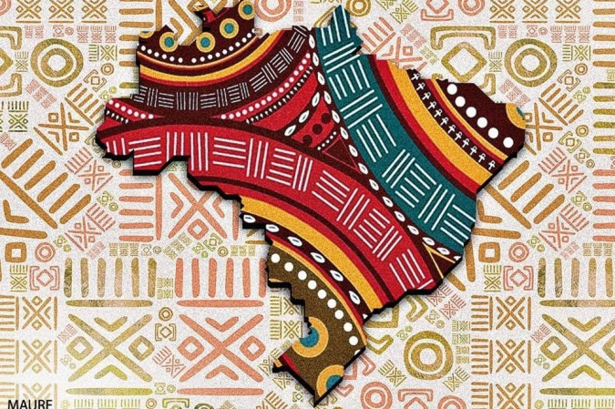

Consciêncianegra


Consciência negra
O Dia Nacional de Zumbi e da Consciência Negra, celebrado em 20 de novembro, foi
instituído oficialmente pela lei nº 12.519, de 10 de novembro de 2011. A data faz
referência à morte de Zumbi, o então líder do Quilombo dos Palmares situado entre
os estados de Alagoas e Pernambuco, na região Nordeste do Brasil. Zumbi foi morto
em 1695, na referida data, por bandeirantes liderados por Domingos Jorge Velho.
Com a redemocratização do Brasil e a promulgação da Constituição de 1988, vários segmentos da sociedade, inclusive os movimentos sociais, como o Movimento Negro, obtiveram maior espaço no âmbito das discussões e decisões políticas. A lei de preconceito de raça ou cor (nº 7.716, de 5 de janeiro de 1989) e leis como a de cotas raciais, no âmbito da educação superior, e, especificamente na área da educação básica, a lei nº 10.639, de 9 de janeiro de 2003, que instituiu a obrigatoriedade do ensino de História e Cultura Afro-brasileira, são exemplos de legislações que preveem certa reparação aos danos sofridos pela população negra na história do Brasil. A figura de Zumbi dos Palmares é especialmente reivindicada pelo movimento negro como símbolo de todas essas conquistas, tanto que a lei que instituiu o dia da Consciência Negra foi também fruto dessa reivindicação.
 
